P8 · Shared Paid-report Delivery Core
PARTIAL · EVIDENCE_GAPS_OPEN · 55 local named checks passed. Human acceptance and P9 handoff are not asserted.
首个剩余阻断 / First remaining blocker
持久输出存在但原方法 owner 生成锁未释放时，BaZi 适配器仍进入待对账状态。不得以通用 QA 适配器的中断通过覆盖这一实际边界。
Reconcile demonstrably persisted method output and invocation-held lock without weakening exclusion or repeating a provider request.
SOURCE: local successor in progress · DEPLOYED: NOT_RUN · LIVE_CUSTOMER: RUNTIME_UNVERIFIED
Provider calls / cost: 0 / USD0 · Real payments / refunds: 0 / 0 · Commit / push / deploy: 0 / 0 / 0
本轮证据
现有视觉保留
当前客户 DOM 背景已为白/暖白；没有复现粉色 CSS 来源，没有改动 BaZi 视觉。P7 baseline V3 保留，V3.1 未创建。
完整 48 页客户 HTML · 实际生成 PDF（本地模拟内容）
截图引用 / Archive
13 张，11058015 bytes。保留本轮目录及 SHA256；不删除、不覆盖历史截图，逐项清理审批另做。
content/production-closure/live-customer-commercial-convergence/bazi-r2-p8/W0-P13-CURRENT.png · 824842 bytes
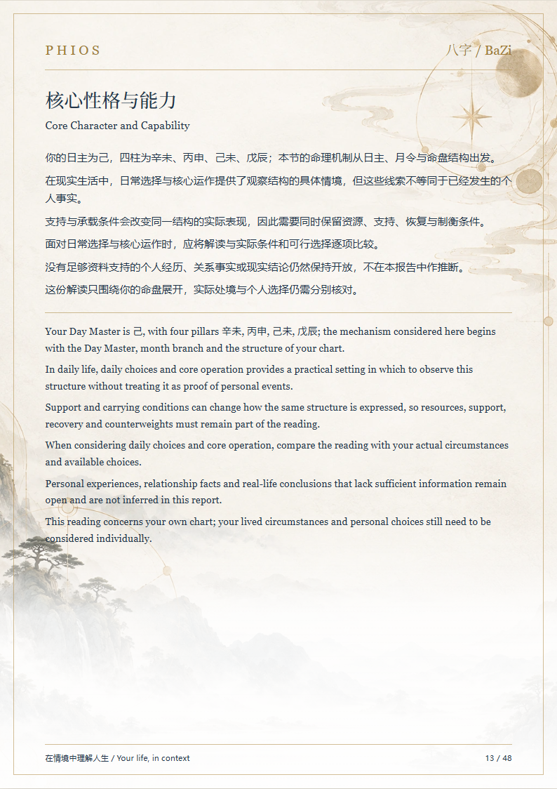
content/production-closure/live-customer-commercial-convergence/bazi-r2-p8/W0-P12-CURRENT.png · 734802 bytes
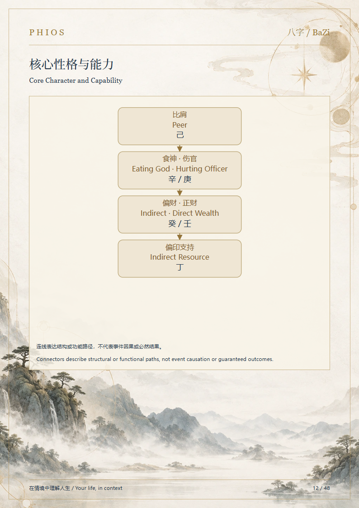
content/production-closure/live-customer-commercial-convergence/bazi-r2-p8/W0-P47-CURRENT.png · 717410 bytes
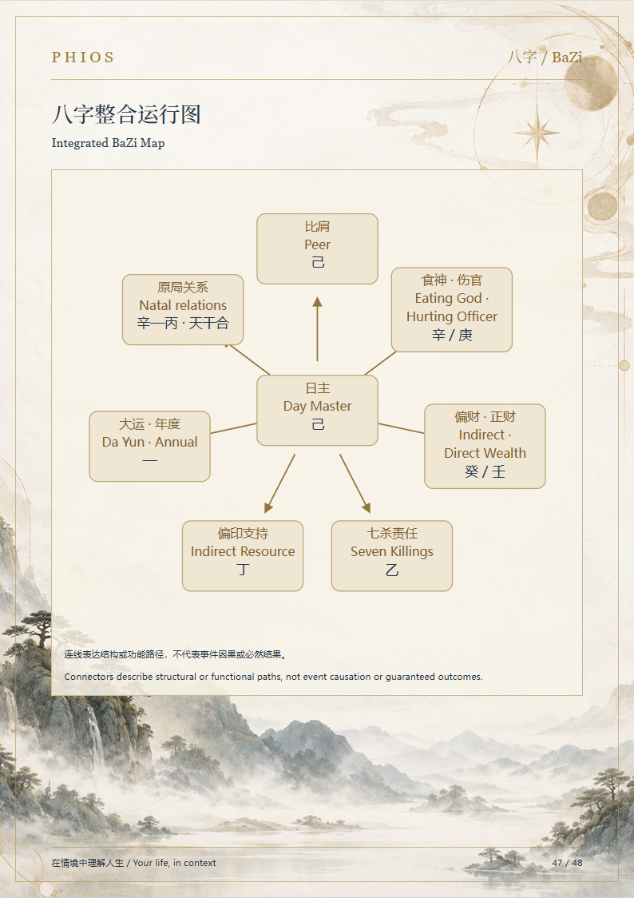
content/production-closure/live-customer-commercial-convergence/bazi-r2-p8/W0-P45-CURRENT.png · 837488 bytes
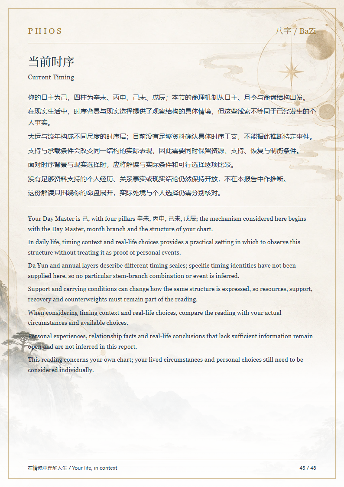
content/production-closure/shared-paid-report-delivery/bzr-conformance/P01-SCREEN.png · 1368497 bytes
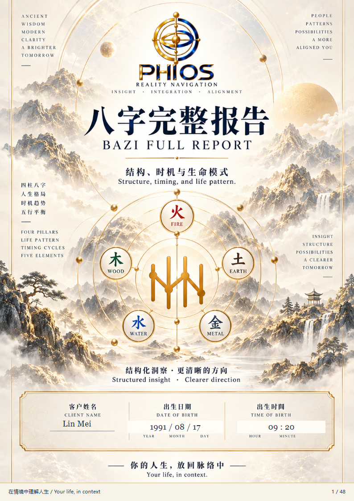
content/production-closure/shared-paid-report-delivery/bzr-conformance/P13-SCREEN.png · 824842 bytes

content/production-closure/shared-paid-report-delivery/bzr-conformance/P22-SCREEN.png · 731139 bytes
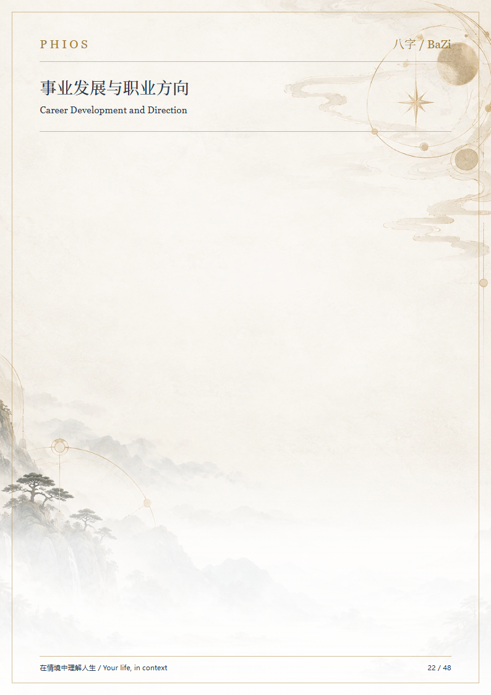
content/production-closure/shared-paid-report-delivery/bzr-conformance/P07-SCREEN.png · 637488 bytes
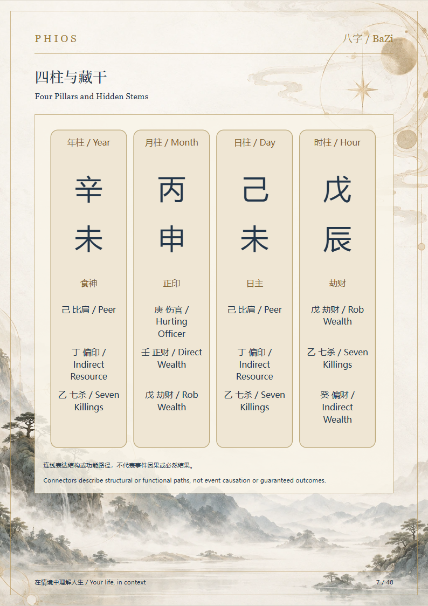
content/production-closure/shared-paid-report-delivery/bzr-conformance/P45-SCREEN.png · 837488 bytes

content/production-closure/shared-paid-report-delivery/bzr-conformance/P48-SCREEN.png · 776198 bytes
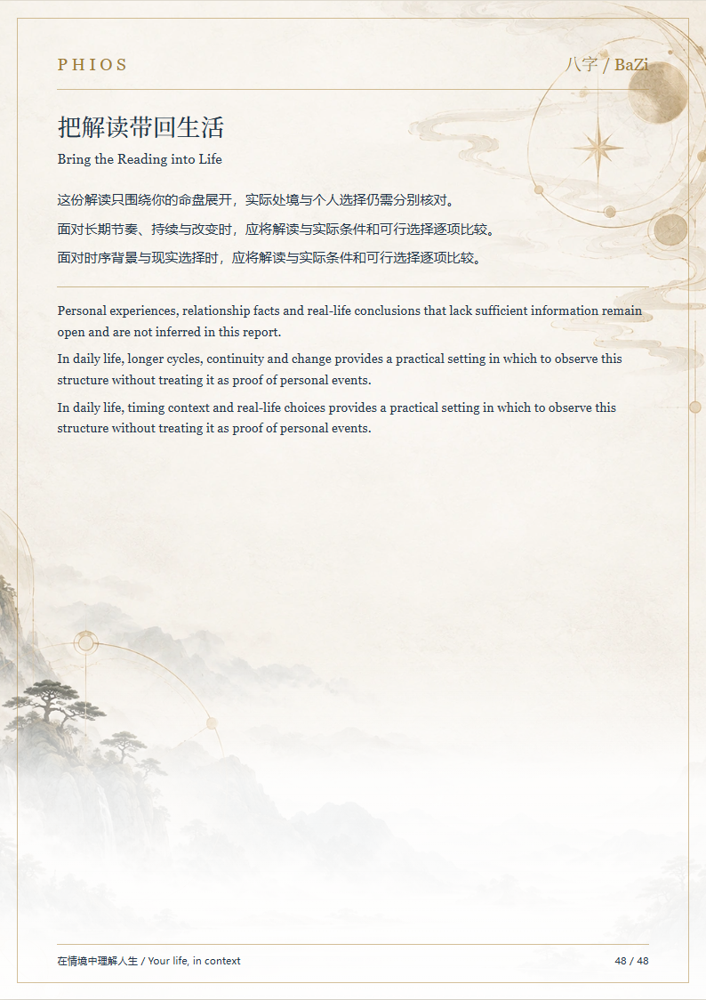
content/production-closure/shared-paid-report-delivery/bzr-conformance/PDF-COVER.png · 1798111 bytes
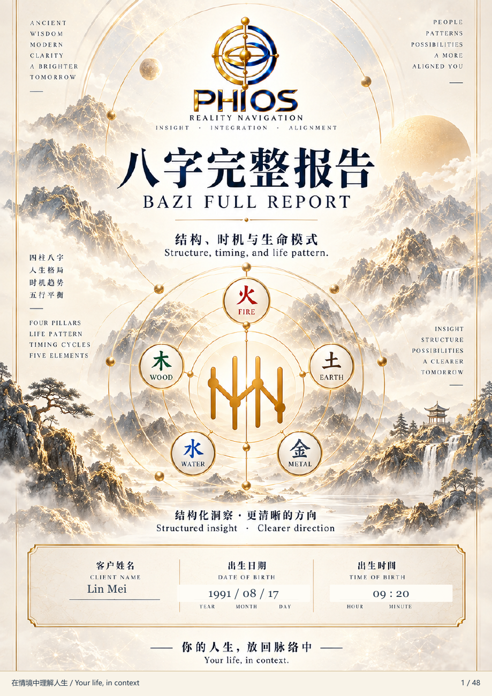
content/production-closure/shared-paid-report-delivery/bzr-conformance/PDF-DIAGRAM-47.png · 916445 bytes
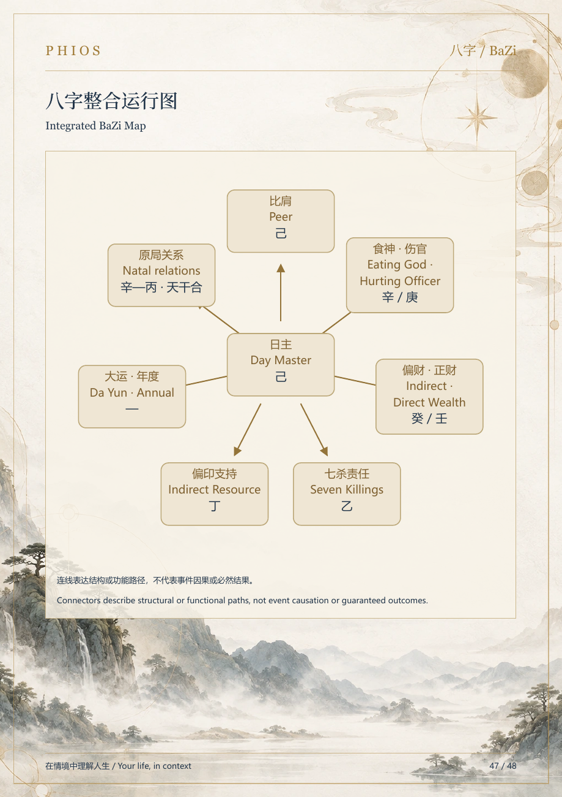
content/production-closure/shared-paid-report-delivery/P8-REVIEW-FAILURE.png · 53265 bytes
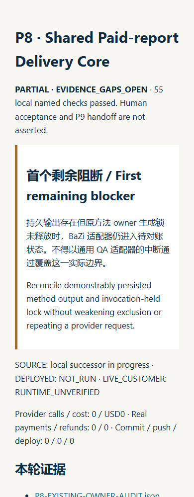
尚缺证据
- METHOD_OWNER_CRASH_RECONCILIATION — Reconcile demonstrably persisted method output and invocation-held lock without weakening exclusion or repeating a provider request.
- PRODUCTION_BOUNDARY_FENCING — Prove method artifact/material writes cannot continue from an expired shared job worker while watchdog advances refund.
- REFUND_SIGNED_WEBHOOK_RECONCILIATION — Complete paid job reconciliation from existing signed Commerce refund events, including replay, pending and unknown outcomes.
- DIVERSE_NATIVE_ADAPTER_MATRIX — P8-specific useful-god known/unknown, timing contexts, relationship and hidden-stem fixture matrix. Single current-customer positive and shared QA mocks are not this proof.
- CUSTOMER_ENTRY_BROWSER — Actual account setup/checkout/status interaction and bilingual browser evidence. Account status source/API and server tests are present, end-to-end browser proof is pending.
实际生产源码修改
| Path | Reason |
|---|
| functions/account/method-report-delivery.js | Reuse one method adapter registry |
| functions/commerce/commerce-stripe-api.js | Server readiness gate before order/Stripe |
| functions/commerce/commerce-stripe-events.js | One paid job after verified payment |
| functions/personal-reading/paid-report-context.js | Attach shared job refs to the existing cost owner |
| functions/personal-reading/report-generation-budget.js | Persist job/stage/attempt refs without changing money policy |
| functions/account/report-purchase-progress.js | Project server job status through the existing account owner |
| assets/customer-ui/js/surfaces/account-private-material.js | Display safe bilingual server delivery status |
| content/registry/runtime-migrations.json | Register one additive local migration |
新增 owner、实际前后哈希、命令退出码、初次失败及范围限制见 JSON。其他窗口改动保留。P8 全部准入门槛未闭合，P9 handoff 未创建。